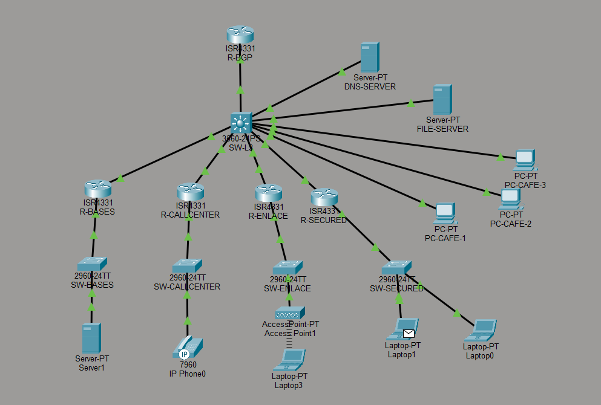
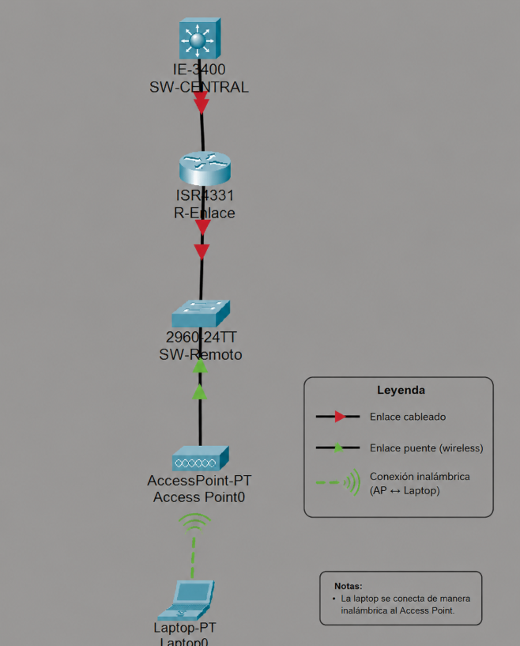

Proyecto mikro-net
Documento que describe los pasos detallados para la implementación de cada servicio, tanto interno como externo, así como la configuración de la infraestructura de red. Estará disponible en el servidor web de cada organización.
También estarán disponibles en el servidor web de cada organización. Existirá uno para las redes de 1º y 2º nivel, permitiendo visualizar tanto la integración con la red general de mikro-net como la estructura interna de cada organización.
La organización Enlace Remoto cuenta con dos ubicaciones físicas. Una de ellas se encuentra lejos y necesita acceder a los servicios de mikro-net.
Para lograrlo, la organización mantiene un puente inalámbrico (WiFi Bridge) entre sus ubicaciones. Los usuarios de la ubicación remota se conectan mediante estaciones de trabajo con tarjetas Ethernet y cables UTP.
El objetivo principal es permitir el acceso a los servicios internos y externos de mikro-net utilizando protocolos de enrutamiento dinámico y mecanismos de seguridad.
| Componente | Tecnología | Descripción |
|---|---|---|
| Enrutamiento | OSPF | Se implementó OSPF entre el router ISR4331 y el switch central Catalyst 9200L. |
| Switch Central | Cisco Catalyst 9200L | El switch soporta OSPF en su imagen base. |
| BGP | No implementado | No fue posible implementar BGP debido a limitaciones de compatibilidad en el switch central. |
| Acceso inalámbrico | WiFi Bridge | Se utilizó un Access Point para conectar clientes remotos. |
| Nombre | Rol |
|---|---|
| Angie Isabel Mora | Administrador de Red |
| Yamell Barrit | Configuración |
| Josue Delgado | Soporte Técnico / Configuración |
La siguiente imagen muestra la integración de nuestra organización dentro de la infraestructura general de mikro-net.

La siguiente topología muestra la estructura interna de la organización Enlace Remoto.

| Dispositivo | Interfaz | Dirección IP | VLAN |
|---|---|---|---|
| Router Principal | ether1 | 10.10.1.1/24 | 20 |
| Bridge WiFi | wlan1 | 10.10.1.2 | 20 |
| Router Remoto | ether1 | 10.10.2.1/24 | 30 |
| Cliente 1 | eth0 | DHCP | 30 |
Los puertos utilizados en el switch remoto corresponden al rango:
GigabitEthernet1/0/2 - GigabitEthernet1/0/6Estos puertos fueron destinados para dispositivos internos y conectividad de la infraestructura local.
/ip address
add address=10.10.1.1/24 interface=ether1/interface wireless
set wlan1 mode=bridge ssid=EnlaceRemoto/routing ospf instance
add name=backbone
/routing bgp connection
add name=bgp-mikronet remote.address=192.168.1.1router ospf 1
router-id 1.1.1.1
network 10.10.1.0 0.0.0.255 area 0El protocolo OSPF fue implementado tanto en el router ISR4331 como en el switch central Catalyst 9200L.
Se implementaron reglas restrictivas para permitir únicamente el tráfico necesario.
/ip firewall filter
add chain=input protocol=icmp action=accept
/ip firewall filter
add chain=input connection-state=established action=accept
/ip firewall filter
add chain=input action=dropSe configuró resolución de nombres para todos los dispositivos internos y servicios.
/ip dns
set servers=8.8.8.8 allow-remote-requests=yesEl servidor web fue configurado utilizando Apache/Nginx para publicar:
/var/www/html
│
├── index.html
├── bitacora.html
├── esquema.html
└── imagenes/
└── topologia.pngLa implementación de la organización Enlace Remoto permitió integrar exitosamente dos ubicaciones físicas mediante conectividad inalámbrica y protocolos de enrutamiento dinámico.
Se validó la conectividad entre sedes, el funcionamiento de OSPF, la resolución DNS y la publicación de servicios web dentro de la infraestructura mikro-net.
A continuación se colocarán las capturas y pruebas de: